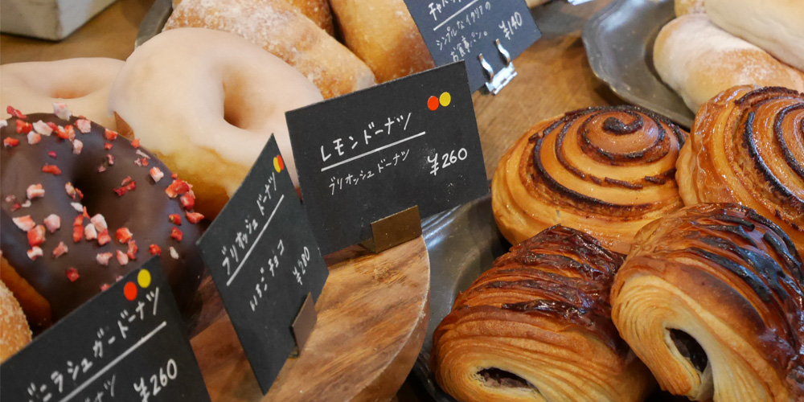

 パンラボへようこそ このサイトでは、私がよくパン巡りをしているため、広島にあるパン屋を紹介します。 広島のローカルパンの紹介 06/06 広島のローカルパンを紹介、広島の有名なパン会社を掲載します。更新は不定期で行います。 おすすめのパン屋 06/03 広島で実際に行ったパン屋の紹介とレビューを写真も添付して掲載します。更新は 毎週水曜日に行います。 自作パンの紹介 06/01 実際に作ってみたパンの写真と感想・反省点などを掲載します。 更新は不定期で行います。